Halo semuanya! Perkenalkan, nama saya Zahwa Nur Aisyah. Saya
berasal dari Samarinda, kota yang terkenal dengan Sungai Mahakam
dan keindahan alamnya. Saat ini, saya sedang menempuh pendidikan
di Universitas Mulawarman, dan sekarang sudah memasuki semester 4.
Sejak kecil, saya memiliki ketertarikan di bidang seni dan
kreativitas. Hobi saya adalah menggambar, desain, dan editing
video. Saya senang mengasah keterampilan ini, baik untuk keperluan
pribadi maupun untuk membantu orang lain dalam membuat konten
visual yang menarik. Selain itu, saya juga menyukai olahraga,
karena menurut saya, menjaga kesehatan tubuh sama pentingnya
dengan mengembangkan keterampilan dan ilmu pengetahuan. Saya
selalu berusaha untuk belajar hal baru dan terus berkembang, baik
dalam bidang akademik maupun di luar itu. Semoga melalui
perkenalan ini, saya bisa mendapatkan lebih banyak teman yang
memiliki minat serupa atau bahkan belajar dari pengalaman orang
lain. Terima kasih!
Perjalanan Keluarga ke Banjarmasin
Akhir pekan lalu, aku dan keluargaku melakukan perjalanan dari Samarinda
ke Banjarmasin untuk menghadiri acara keluarga besar. Perjalanan ini
cukup panjang, memakan waktu sekitar 13 jam, tapi kami semua sangat
antusias karena ini adalah kesempatan langka untuk berkumpul dengan
keluarga besar. Kami berangkat pagi-pagi sekali, sekitar pukul 5 subuh,
agar bisa sampai di Banjarmasin sebelum malam. Sepanjang perjalanan,
kami menikmati pemandangan hijau hutan Kalimantan, sungai yang
membentang luas, serta beberapa perkampungan kecil di sepanjang jalan.
Ayah yang menyetir, sementara ibu sibuk menyiapkan camilan dan
memastikan kami semua merasa nyaman. Di dalam mobil, suasana terasa
menyenangkan. Aku menghabiskan waktu dengan mendengarkan musik sambil
sesekali mengobrol dengan adikku. Kami juga sempat berhenti beberapa
kali untuk beristirahat dan makan di warung makan sederhana di pinggir
jalan. Setelah perjalanan panjang, akhirnya kami tiba di Banjarmasin
menjelang malam. Kami langsung menuju rumah keluarga yang menjadi tuan
rumah acara. Suasana di sana begitu hangat dan ramai, dengan sanak
saudara yang sudah lama tak bertemu. Kami bercengkerama, menikmati
hidangan khas Banjarmasin seperti Soto Banjar dan kue-kue tradisional.
Acara berlangsung dengan penuh kebahagiaan, dan kami merasa perjalanan
panjang ini sangatlah sepadan. Meski lelah, bisa bertemu dan berkumpul
bersama keluarga besar adalah hal yang sangat berharga. Setelah beberapa
hari di Banjarmasin, kami pun bersiap untuk kembali ke Samarinda,
membawa kenangan indah dari perjalanan ini. 😊
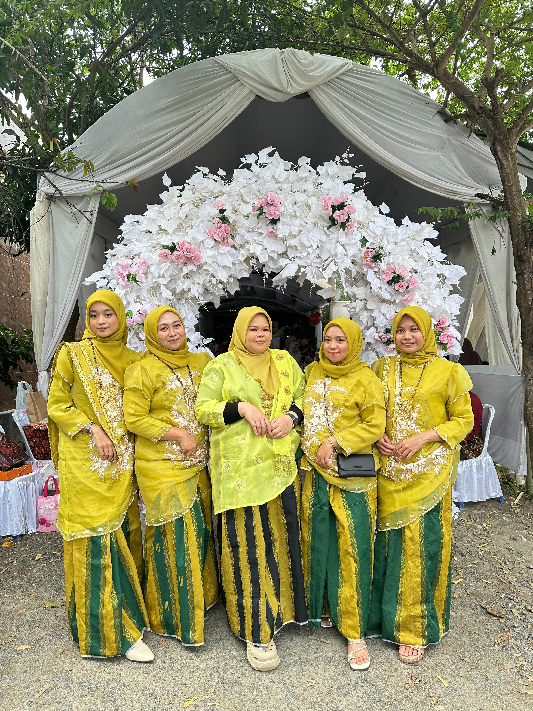
Gunung Stelling
Sore itu, aku dan beberapa teman memutuskan untuk mendaki Gunung
Stelling. Kami memulai perjalanan dari AWS, dengan estimasi waktu
sekitar 45 menit untuk mencapai kaki gunung. Sepanjang perjalanan, kami
melewati perkampungan warga dengan rumah-rumah sederhana yang tertata
rapi. Beberapa warga tersenyum ramah saat kami lewat, bahkan ada yang
menyapa dan memberi semangat. Setelah tiba di kaki gunung, kami mulai
mendaki perlahan. Jalurnya cukup menantang dengan beberapa tanjakan
curam, tapi udara sejuk dan suasana alam yang asri membuat kami semakin
semangat. Di beberapa titik, kami berhenti sejenak untuk mengatur napas
dan menikmati pemandangan hijau di sekitar. Saat hampir mencapai puncak,
langit mulai berubah warna keemasan. Kami mempercepat langkah agar bisa
menyaksikan sunset dari atas. Begitu tiba, kami langsung terpukau.
Matahari perlahan tenggelam di cakrawala, menyinari langit dengan
gradasi oranye, merah, dan ungu yang indah. Kami duduk di bebatuan,
menikmati suasana tenang dan angin yang berhembus lembut. Momen itu
terasa begitu damai, membuat segala rasa lelah selama pendakian terbayar
lunas. Setelah puas menikmati pemandangan, kami pun bersiap turun
sebelum hari benar-benar gelap, membawa pulang kenangan indah dari
perjalanan singkat ini. 🌅✨
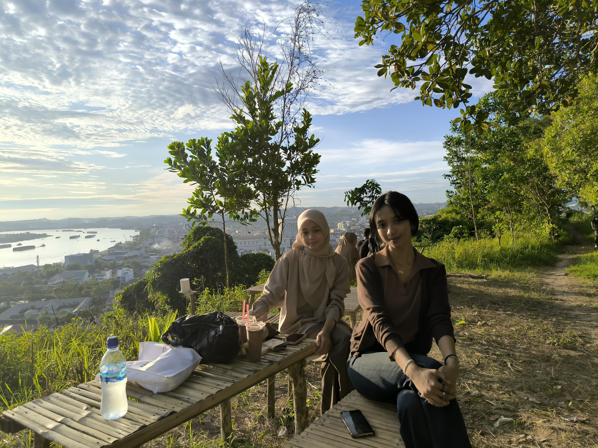
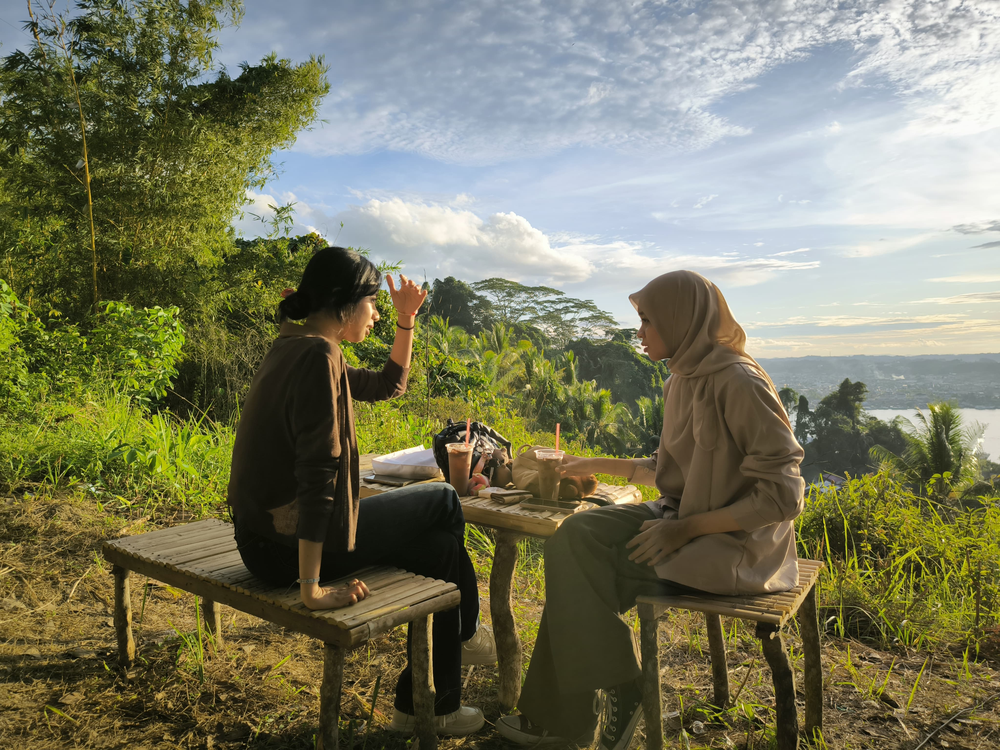
Jalan jalan ke Bigmall
Hari itu, aku dan temanku memutuskan untuk jalan-jalan ke Big Mall
Samarinda. Kami ingin sekadar bersantai, berbelanja, dan tentu saja
kulineran! Setibanya di mall, kami langsung berjalan-jalan mengelilingi
beberapa toko, melihat-lihat pakaian, aksesoris, dan barang-barang unik
lainnya. Setelah cukup puas berkeliling, rasa lapar mulai menyerang.
Kami pun mencari tempat makan dan akhirnya memilih food court yang
memiliki berbagai pilihan kuliner menggoda. Aku memesan soto banjar,
teman-temanku ada yang mencoba chicken katsu, mie ayam, hingga es krim
sebagai hidangan penutup. Kami makan dengan lahap sambil berbincang
tentang banyak hal, dari kuliah hingga rencana liburan. Setelah puas
menikmati makanan, kami kembali berjalan-jalan, mencoba beberapa
permainan di arena hiburan, dan berfoto-foto di beberapa spot menarik di
dalam mall. Waktu terasa begitu cepat berlalu, hingga akhirnya kami
memutuskan untuk pulang dengan perut kenyang dan hati senang. Hari yang
sederhana, tapi sangat menyenangkan! 😊🍽️✨
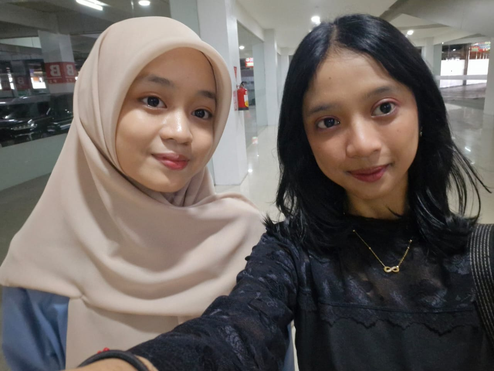
Teman Baru
Hari pertama OSPEK Universitas adalah momen yang penuh campuran perasaan
antara semangat, gugup, dan penasaran. Zahwa, Nipay, Yuyun, dan Giska
tidak saling mengenal sebelumnya, tapi mereka akhirnya bertemu dalam
satu kelompok saat kegiatan berlangsung. Dari awal, mereka sudah merasa
cocok. Saat menjalani berbagai kegiatan OSPEK mulai dari pengenalan
kampus, games kelompok, hingga tugas-tugas seru mereka selalu bersama.
Bahkan, mereka sering bekerja sama saat diberi tantangan dari panitia.
Kebersamaan itu semakin mempererat hubungan mereka, hingga akhirnya
mereka menjadi sahabat. Seiring berjalannya waktu, mereka melewati
berbagai semester dengan penuh perjuangan. Ada saat-saat sibuk
menghadapi tugas kuliah, belajar bersama menjelang ujian, hingga
menghabiskan waktu luang untuk sekadar nongkrong dan bercerita. Di
semester berikutnya, mereka mulai mengenal lebih banyak teman baru. Di
antara mereka, ada Ima dan Karin.
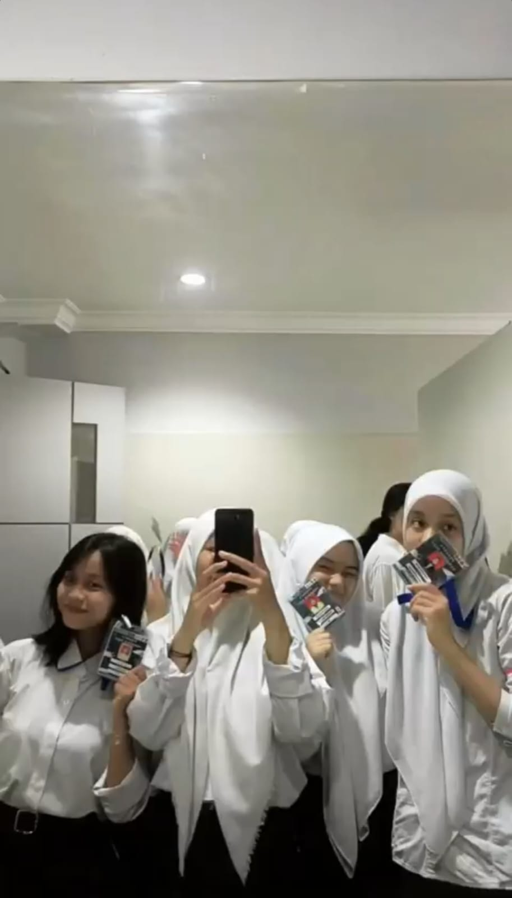
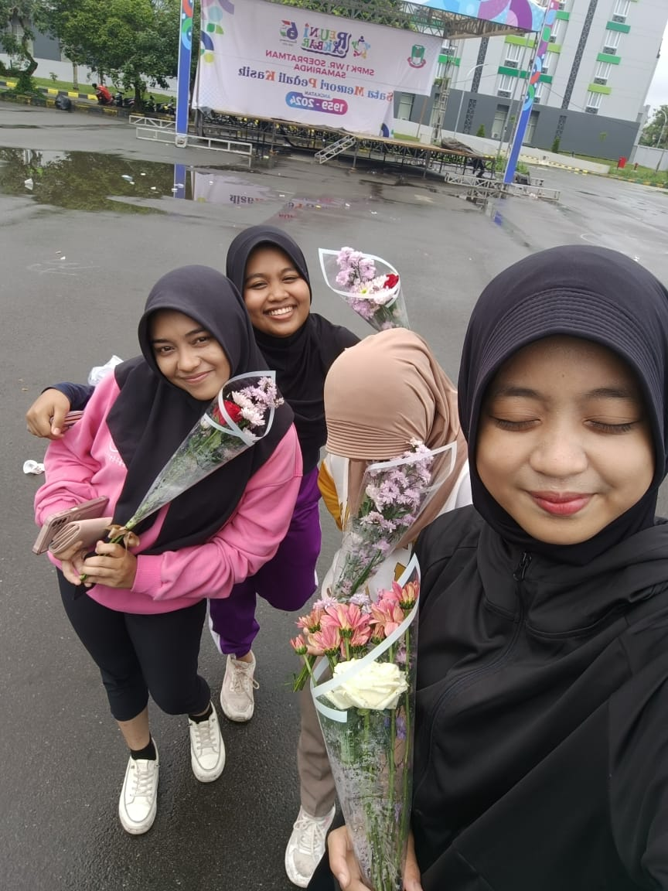
Suprise Ulang Tahun
Malam itu, aku, Yuyun, Nipay, dan Karin berkumpul di Cafe Deka untuk
menyiapkan kejutan ulang tahun untuk Giska. Kami sudah merencanakan
semuanya dari dekorasi sederhana hingga kue ulang tahun. Saat Giska
tiba, kami berpura-pura santai seperti tidak terjadi apa-apa. Begitu ia
duduk, pelayan datang membawa kue dengan lilin menyala, dan kami
serempak menyanyikan lagu ulang tahun. Giska terkejut sekaligus terharu
melihat kejutan ini. Kami menghabiskan malam dengan tawa, berbagi
cerita, dan menikmati hidangan favorit. Malam itu terasa begitu hangat,
penuh kebahagiaan dan kebersamaan. 🎂✨
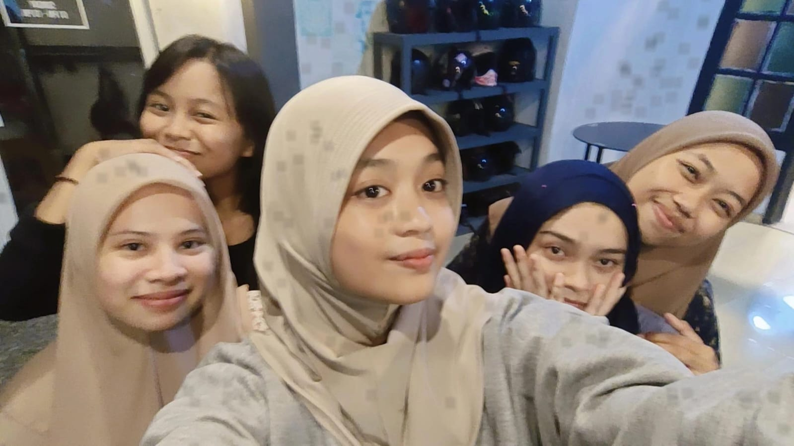
Rumah Ulin Arya
Suatu pagi yang cerah, aku dan teman-teman memutuskan untuk pergi ke
Rumah Ulin Arya, sebuah tempat wisata yang terkenal dengan suasana
alamnya yang asri. Kami sangat antusias karena selain menikmati
pemandangan, kami juga berencana untuk menaiki kuda. Setibanya di sana,
kami langsung disambut dengan udara segar dan pemandangan hijau yang
menenangkan. Setelah berkeliling sejenak, kami menuju area berkuda.
Awalnya, aku sedikit gugup, tapi setelah diberi arahan oleh pemandu, aku
mulai merasa nyaman. Saat kuda mulai berjalan pelan, perasaan senang dan
bebas menyelimuti. Angin sepoi-sepoi menambah keseruan pengalaman ini.
Teman-temanku juga tampak menikmati momen mereka, beberapa bahkan
tertawa saat mencoba mengendalikan kuda yang sedikit lincah. Setelah
puas berkuda, kami bersantai di gazebo sambil menikmati minuman segar.
Hari itu benar-benar menyenangkan, penuh tawa dan pengalaman baru yang
tak terlupakan. 🐎🌿✨
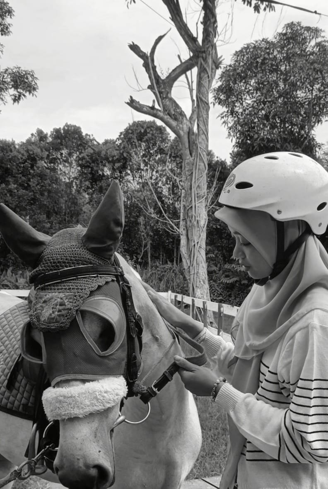
Hobi
Sejak kecil, Zahwa Nur Aisyah sudah tertarik dengan dunia seni dan
kreativitas. Awalnya, ia gemar menggambar dengan pensil di buku sketsa,
tetapi seiring berjalannya waktu, ketertarikannya berkembang ke desain
grafis. Saat berkuliah, Zahwa mulai mendalami dunia desain lebih serius.
Ia belajar menggunakan berbagai software seperti Photoshop, Illustrator,
dan Canva. Setiap ada waktu luang, ia selalu mencoba membuat desain
baru, entah itu untuk poster, logo, atau ilustrasi digita
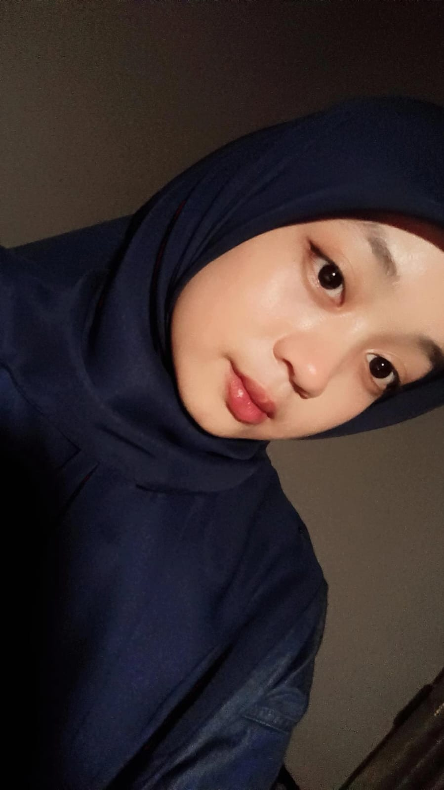
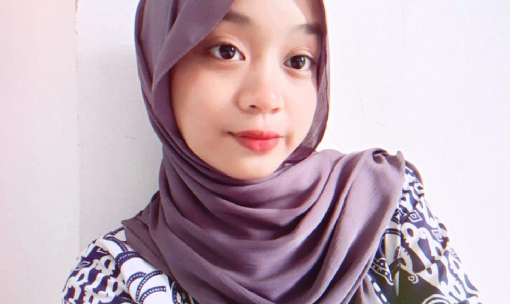
Kuliner
Sebagai pecinta kuliner, saya selalu antusias mencoba berbagai makanan
khas di Samarinda. Kota ini punya banyak pilihan kuliner, mulai dari
makanan tradisional hingga modern yang menggugah selera. Salah satu
favoritku adalah soto banjar, dengan kuahnya yang gurih dan potongan
ayam yang lembut. Selain itu, saya juga suka menikmati nasi kuning
Samarinda yang kaya rempah, sering disantap dengan lauk ayam, telur, dan
sambal khas.
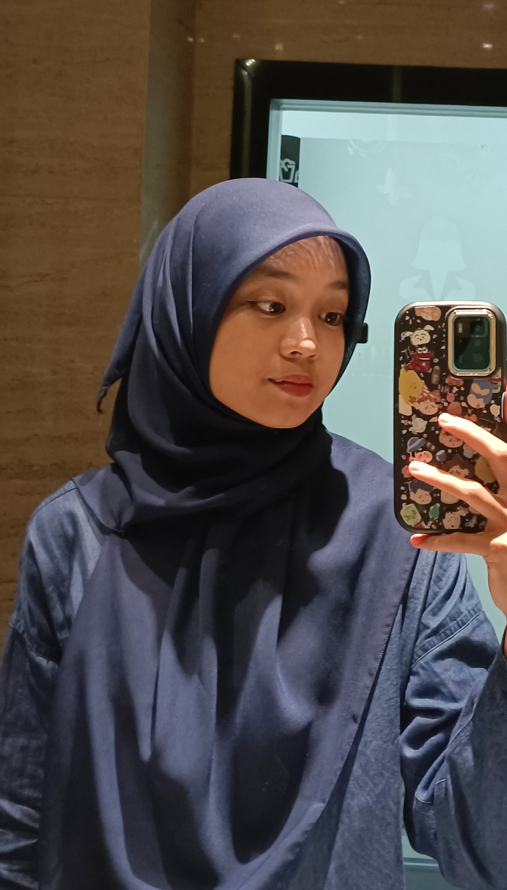
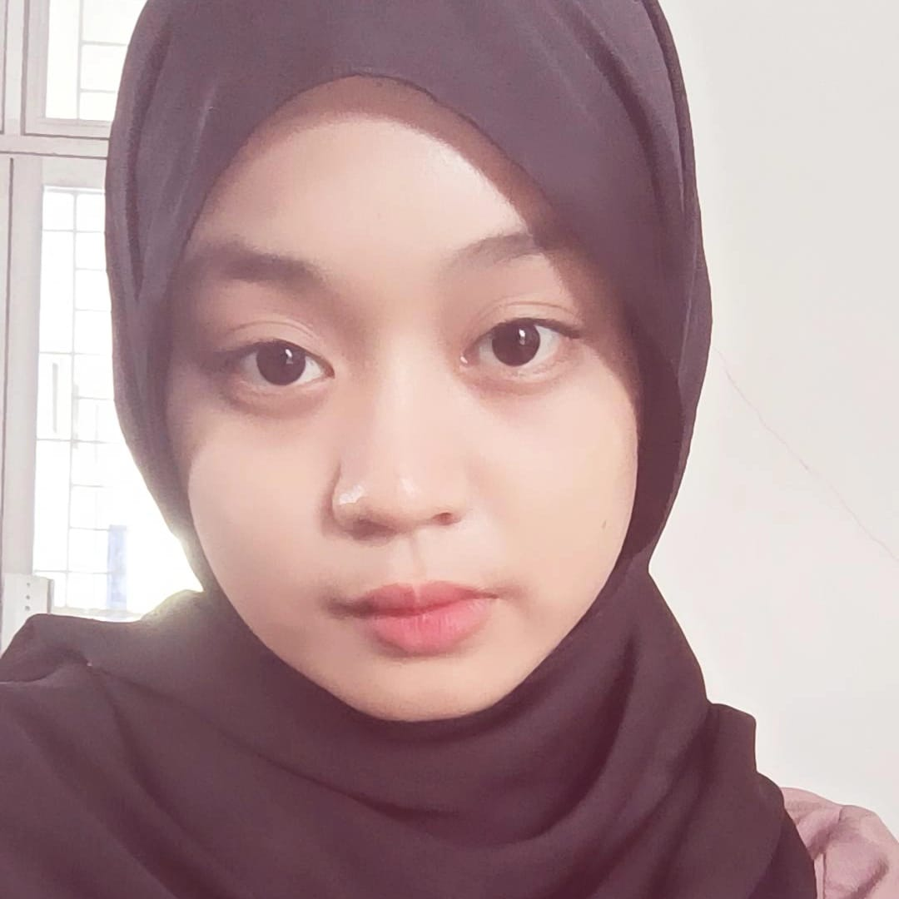
Diri Sendiri
aya pernah merasa bahwa saya harus selalu menyenangkan orang lain agar
bisa diterima. Saya berusaha memenuhi ekspektasi banyak orang, bahkan
jika itu berarti mengorbankan kebahagiaan saya sendiri. Namun, seiring
waktu, saya menyadari bahwa hal itu justru membuat saya lelah dan
kehilangan jati diri. Perlahan, saya mulai belajar untuk mencintai diri
sendiri terlebih dahulu. Saya berhenti membandingkan diri dengan orang
lain dan lebih fokus pada kelebihan serta impian saya. Saya memberi
waktu untuk diri sendiri, melakukan hal-hal yang saya sukai, seperti
menggambar, mendesain, dan berolahraga. Saya juga belajar menerima
kekurangan saya, karena saya tahu bahwa setiap orang memiliki perjalanan
masing-masing. Saya tidak lagi terlalu keras pada diri sendiri ketika
melakukan kesalahan. Sebaliknya, saya melihatnya sebagai bagian dari
proses untuk tumbuh dan berkembang. Dengan mencintai diri sendiri, saya
merasa lebih bahagia dan lebih percaya diri. Saya sadar bahwa
kebahagiaan tidak selalu datang dari orang lain, tetapi dari bagaimana
saya menerima dan menghargai diri saya sendiri. Dan yang paling penting,
saya belajar bahwa saya berharga, bukan karena orang lain mengatakannya,
tetapi karena saya sendiri yang meyakininya. 💖✨
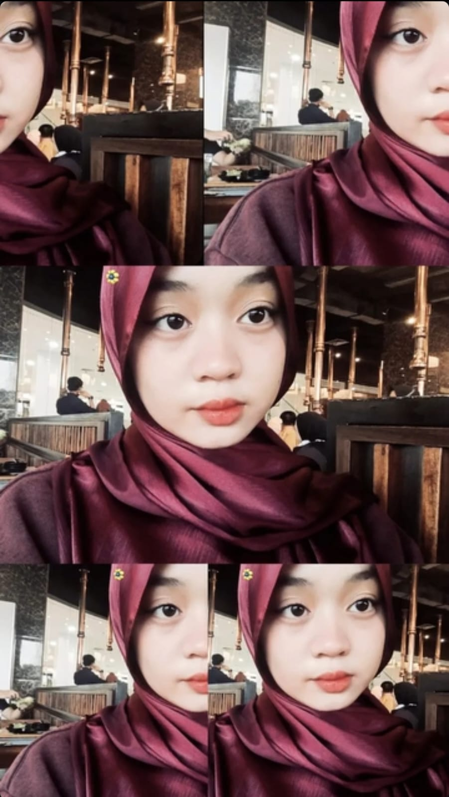
Pengalaman
Sejak kecil, saya telah melewati berbagai pengalaman, baik yang
menyenangkan maupun penuh tantangan. Dari kegembiraan saat belajar
menggambar hingga kekecewaan karena kegagalan, semuanya memberi saya
pelajaran berharga. Saya belajar bahwa tidak semua hal berjalan sesuai
keinginan, tetapi setiap kesalahan adalah bagian dari proses tumbuh.
Dulu, saya sering menyalahkan diri sendiri, tetapi kini saya menyadari
bahwa setiap pengalaman baik maupun buruk—membentuk saya menjadi pribadi
yang lebih kuat. Hidup adalah perjalanan, dan saya terus belajar dari
setiap cerita yang saya jalani. ✨
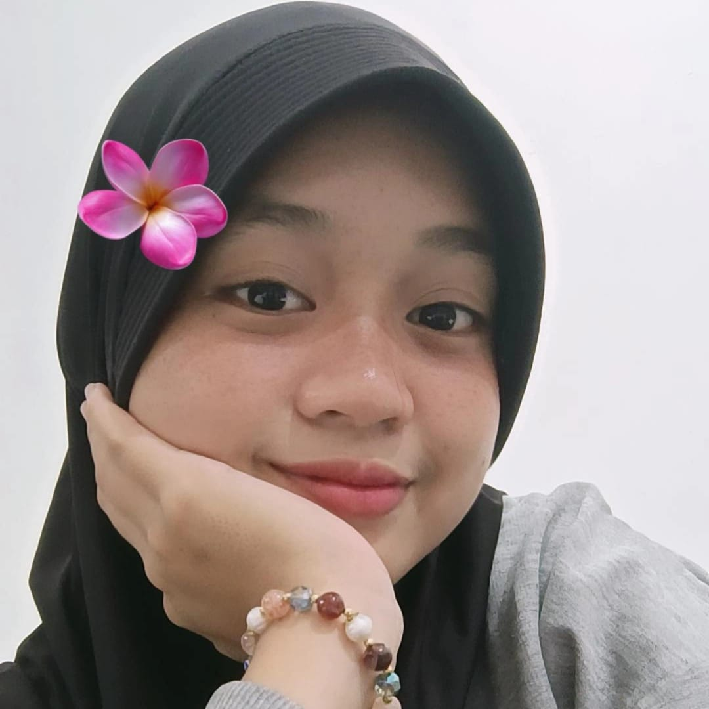
Terima Kasih
Waktu berlalu begitu cepat. Rasanya seperti baru kemarin memulai
semester pertama, penuh dengan rasa canggung dan tantangan baru. Kini,
setelah melewati begitu banyak semester, saya menyadari betapa
berharganya setiap momen yang telah dilalui. Terima kasih untuk semua
teman yang telah menemani sejak awal. Kita telah melewati banyak suka
dan duka bersama dari tugas yang menumpuk, begadang untuk ujian, hingga
momen-momen kecil yang penuh tawa dan kebahagiaan. Setiap tantangan yang
kita hadapi telah menguatkan kita, dan setiap kebersamaan yang kita
jalani telah membuat perjalanan ini lebih bermakna. Saya bersyukur
memiliki kalian sebagai bagian dari perjalanan ini, dan semoga kita
terus melangkah bersama menuju masa depan yang lebih baik. Terima kasih
untuk semuanya! 💙✨